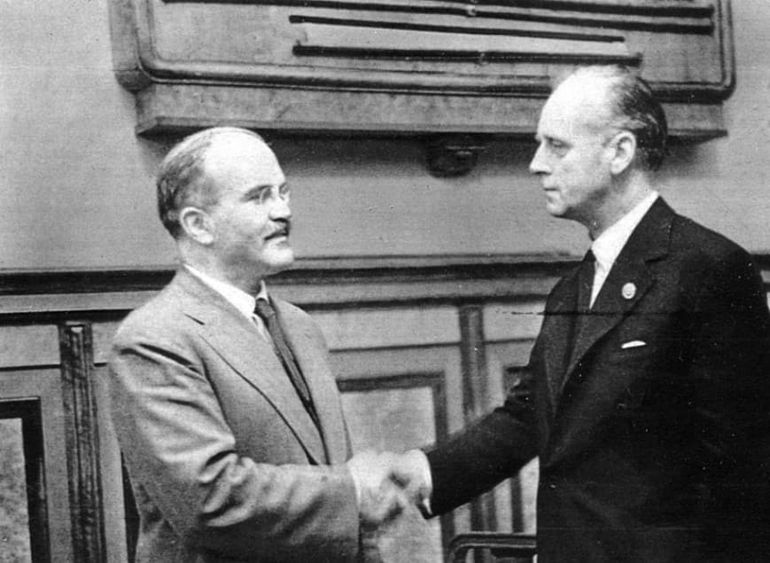
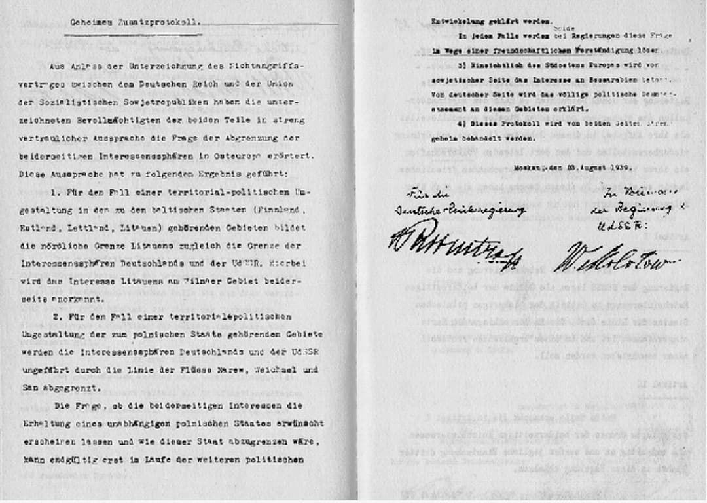
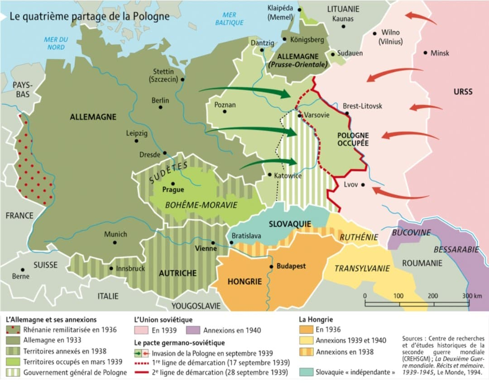
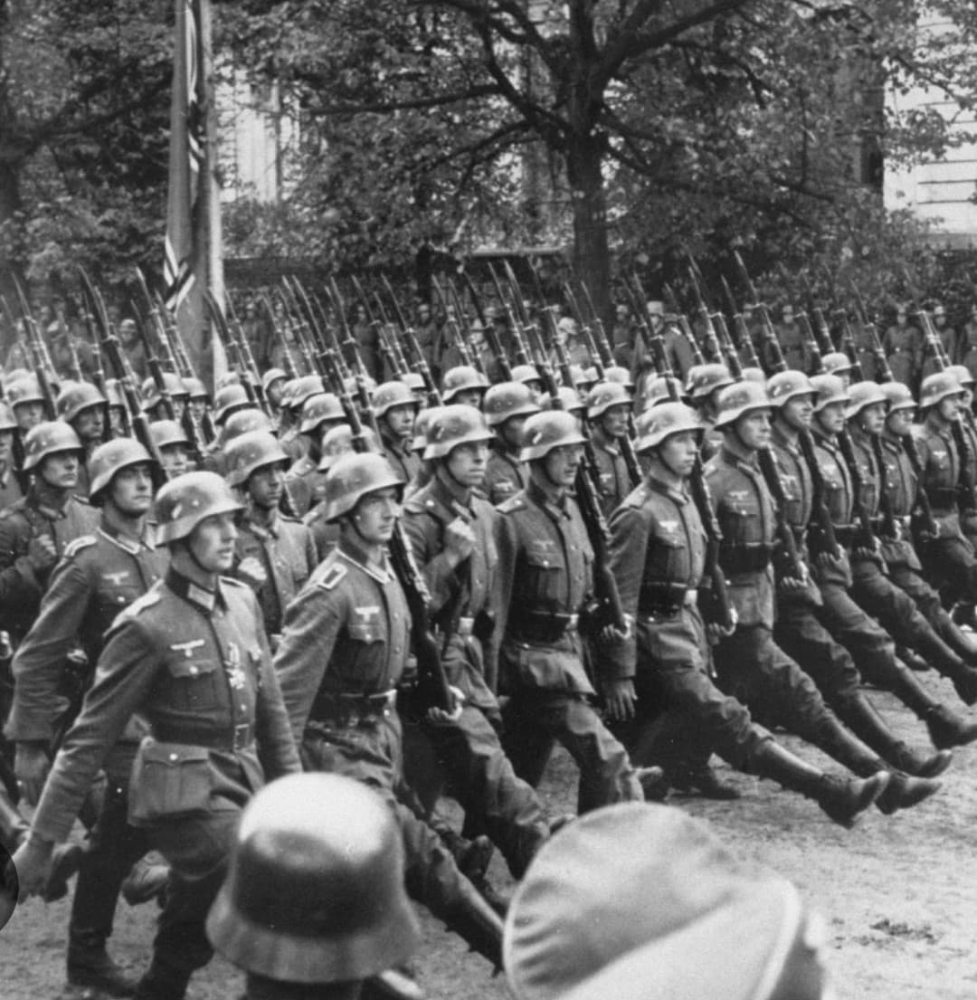

Pacte germano-soviétique
23 août 1939 – Un accord cynique avant la guerre
Un accord entre deux régimes ennemis
Le 23 août 1939, l’Allemagne nazie et l’Union soviétique signent un pacte de non-agression,
connu sous le nom de pacte germano-soviétique ou pacte Molotov-Ribbentrop.
Cet accord surprend le monde : un régime nazi farouchement anticommuniste s’entend avec un régime communiste.
Derrière l’accord officiel se cache un protocole secret qui prévoit le partage de la Pologne
et la division de zones d’influence en Europe de l’Est. Ce pacte ouvre la voie au déclenchement
de la Seconde Guerre mondiale.
https://youtu.be/113VyOfoYO0?is=i48mLOiVxeaPQOWC
1. La signature du pacte (23 août 1939)

Le pacte est signé à Moscou par Joachim von Ribbentrop, ministre des Affaires étrangères du Reich,
et Viatcheslav Molotov, ministre des Affaires étrangères soviétique.
Hitler et Staline ne se rencontrent pas, mais approuvent l’accord.
Officiellement, il s’agit d’un pacte de non-agression entre deux États qui promettent de ne pas se faire la guerre.
2. Le contenu officiel : non-agression et neutralité

Le texte public du pacte prévoit :
- Un engagement de non-agression entre l’Allemagne et l’URSS
- La neutralité de l’un si l’autre est attaqué par un pays tiers
- Des échanges économiques entre les deux pays
Ce contenu rassure officiellement les deux régimes : ils ne se feront pas la guerre immédiatement
et peuvent concentrer leurs forces ailleurs.
3. Le protocole secret : partage de la Pologne et de l’Europe de l’Est

Le protocole secret, inconnu du public à l’époque, prévoit :
- Le partage de la Pologne entre l’Allemagne et l’URSS
- La division des pays baltes (Estonie, Lettonie, Lituanie) en zones d’influence soviétique
- La Finlande dans la sphère d’influence soviétique
Ce document organise littéralement la découpe de l’Europe de l’Est sur une carte,
sans consultation des peuples concernés. C’est un acte de diplomatie cynique et brutal.
4. Pourquoi Hitler signe le pacte

Hitler prépare l’invasion de la Pologne. Il sait que la France et le Royaume-Uni ont promis de défendre ce pays.
Il veut éviter une guerre sur deux fronts, contre l’Ouest et contre l’URSS.
Le pacte lui garantit que l’Union soviétique restera neutre.
Il obtient ainsi les mains libres pour attaquer la Pologne sans craindre une intervention immédiate de l’URSS.
5. Pourquoi Staline accepte l’accord

Staline voit dans le pacte une occasion de :
- Gagner du temps pour renforcer l’armée soviétique
- Récupérer des territoires perdus après la Première Guerre mondiale
- Repousser la frontière soviétique vers l’ouest
- Éviter une guerre immédiate contre l’Allemagne
Pour lui, il ne s’agit pas d’une alliance idéologique, mais d’un calcul stratégique.
Il pense pouvoir utiliser cet accord à son avantage avant qu’un conflit avec l’Allemagne ne devienne inévitable.
6. Conséquences : la Pologne démembrée et la guerre déclenchée

Le 1er septembre 1939, l’Allemagne envahit la Pologne.
Le 17 septembre, l’URSS attaque à son tour par l’est, conformément au protocole secret.
La Pologne est démembrée entre les deux dictatures.
La France et le Royaume-Uni déclarent la guerre à l’Allemagne,
marquant le début officiel de la Seconde Guerre mondiale.
En 1941, Hitler trahit Staline en lançant l’opération Barbarossa,
et l’URSS rejoint alors le camp des Alliés.
Page du Musée HOP WW2 – Section Mur de Berlin & Guerre froide